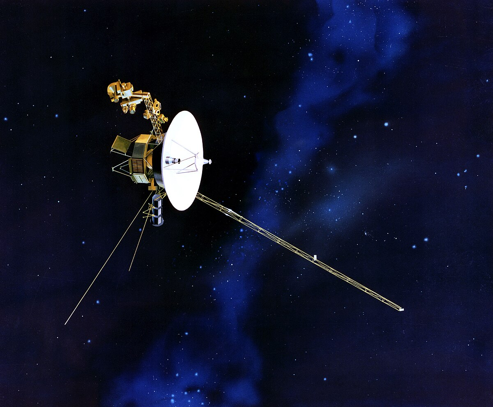

探索卫星
卫星是人类探索地球和宇宙的重要工具。它们绕地球或其他天体运行，收集数据、传输信息，甚至帮助我们观察和理解宇宙。不同类型的卫星被设计用于特定任务，如气象、通信、导航和科学研究等。
关于航海家卫星
航海家计划：航海家1号和2号是NASA在1977年发射的两颗探测器，旨在探索太阳系外的边缘区域。经过多年飞行，它们已经成为人类发射的距离地球最远的探测器，为我们揭开了太阳系行星及其卫星的许多秘密。
太阳系“快递员”：航海家2号是唯一一颗访问过天王星和海王星的探测器，拍摄到这两颗遥远行星的近距离照片，并详细记录了它们的气候、磁场及环系统。航海家1号则在1980年飞越土星后直接进入星际空间，2012年，它成为了首个进入星际空间的人造物体。航海家1号和2号持续向地球发送数据，让科学家们首次直接研究星际空间的环境。
宇宙信使：航海家探测器还携带着“金唱片”——一种记录了地球声音、音乐和图像的信息盘，向潜在的外星文明传递关于人类和地球的信息。这张金唱片象征着人类探索宇宙并与未知生命交流的希望。